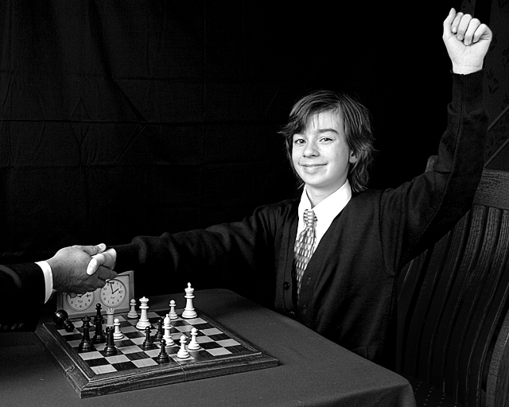
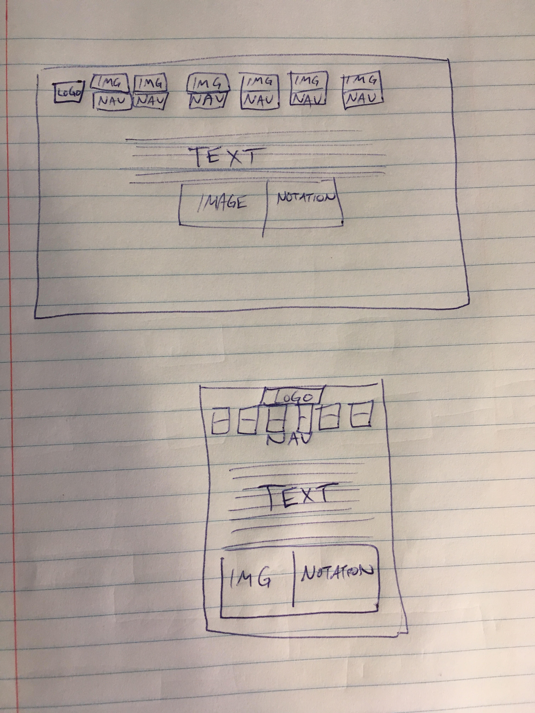

Subject and Purpose of Site:
The site will help inexperienced chess players quickly review how to play the game by showcasing the various chess pieces and their functions. Each page will feature portions of algebraic chess notation, pulled from the JSON file, which will highlight key moves by the highlighted piece, which will allow the learner to also pick up some knowledge of chess notation. The site will also give some other interesting information about chess as appropriate.
Target Audience and Persona
The target audience for this site will be people, both male and female, that are between the ages 8-30. These are the years when people's minds develop the most and they are the most prepared and willing to learn new skills such as chess.
Persona (chess learner): Theophilius. Theophilius is a student in his mid-teen years and inhabits an English-speaking country where secondary education is commonly availabe. He will be curious and inquisitive enough to want to learn about chess. He will likely know someone who plays chess whose guidance is supplementing the information provided on the site. Theophilius will access this site at home or in places such as libraries or schools where chess might be played. He does not necessarily have a particular affinity towards technology beyond that of the average person. He may access this site by desktop/laptop computer, mobile phone, or tablet, as any of these could be accessible while playing chess. Theophilius' motivation is likely to be curiosity about the game of chess, but not a need for a deep understanding of the game, since such would need to be obtained reading books or watching videos that go into more detail on the subject.
"Daring ideas are like chessmen moved forward. They may be beaten, but they may start a winning game." -Johann Wolfgang von Goethe
Content Pages:
Home Page
The home page will introduce the game and give information about chess as appropriate and also highlight the game piece in command: the king.
Queen Page
The queen page will highlight the second-in-command piece: the queen.
Bishop Page
The bishop page will highlight the bishop.
Knight Page
The knight page will highlight the knight.
Rook Page
The rook page will highlight the rook.
Pawn Page
The pawn page will highlight the pawn.
JSON
The Knight and Pawn pages will use the JSON data to display game notation.
Wireframes
Style Guide
Typography
Font: Helvetica
Colors
Primary: White
Secondary: Black
Tertiary: Brown